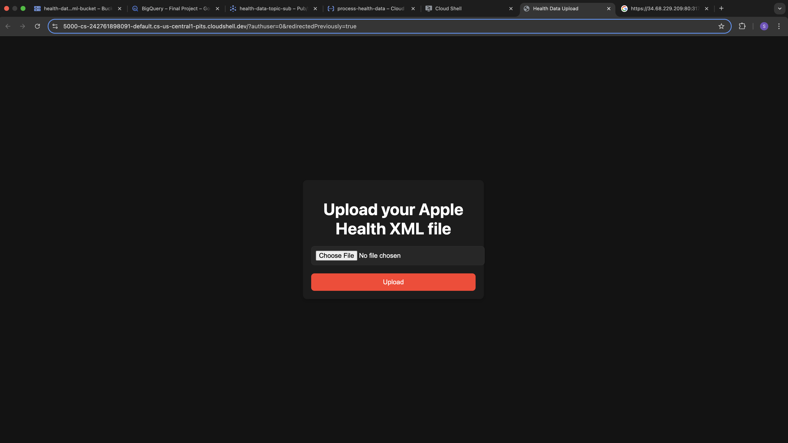
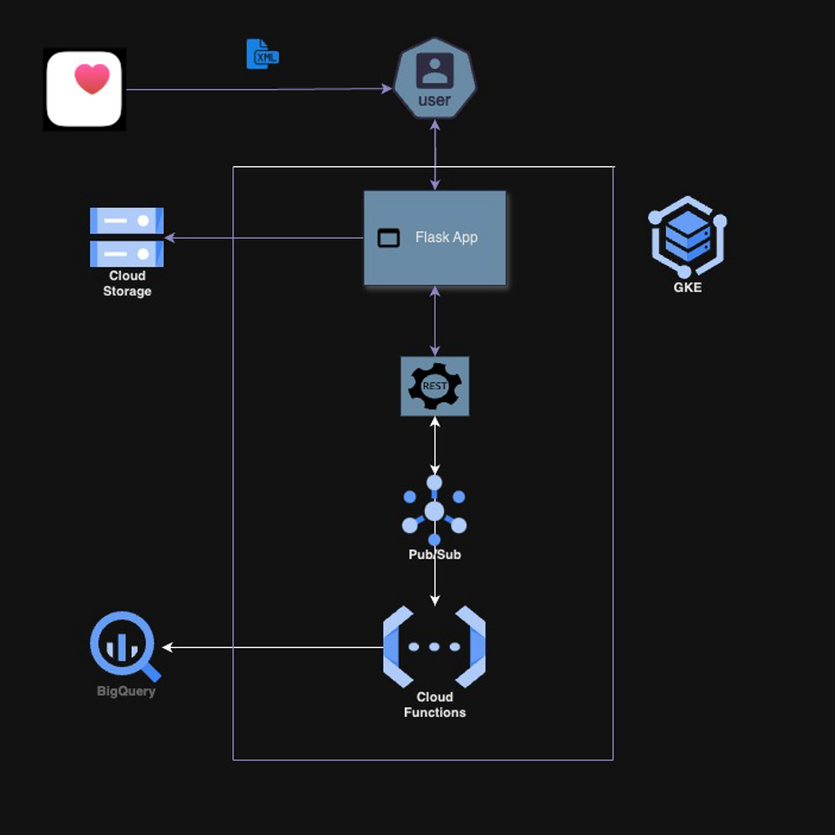
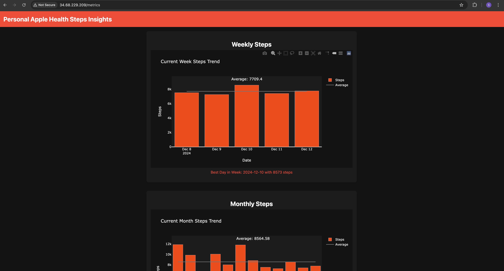

CloudSteps: Personalized Steps Analytics on GCP
 Code Link1. Goal:
The goal of this project is to build a cloud-native, scalable, and efficient service for processing and analyzing Apple Health data, with a particular focus on steps data. The service generates personalized insights, such as weekly, monthly, and yearly averages of step counts, by utilizing various Google Cloud Platform (GCP) services for secure data processing and storage. The system provides users with a simple interface to upload their Apple Health data and retrieve meaningful Steps Analytics including Weekly, Monthly and Yearly trends and averages.
2. Methodology:
Software Components
1. Flask Framework
Purpose: Provides a REST API for users to upload Apple Health files and retrieve analytics.
Advantages:
- Lightweight, easy to implement, and supports API creation.
Disadvantages:
- Requires additional tools for scalability and robustness.
2. Google Cloud Storage
Purpose: Secure storage for raw Apple Health XML files.
Advantages:
- Reliable and scalable object storage solution.
Disadvantages:
- Increased storage costs for larger datasets.
3. Google Pub/Sub
Purpose: Facilitates asynchronous communication between components.
Advantages:
- Real-time messaging, high scalability.
Disadvantages:
- Slight latency during high loads.
4. Google Cloud Functions
Purpose: Processes XML files to extract and structure step data.
Advantages:
- Fully managed, event-driven execution.
Disadvantages:
- Limited runtime (9 minutes per function).
5. Google BigQuery
Purpose: Stores and queries structured step data to generate trends and averages.
Advantages:
- High-speed querying of large datasets.
Disadvantages:
- Costs can increase with frequent queries.
6. Google Kubernetes Engine (GKE)
Purpose: Hosts containerized Flask applications.
Advantages:
- High availability, scalability, and reliability.
Disadvantages:
- Requires configuration and management of cluster resources.
7. Docker
Purpose: Containerizes Flask and supporting services for consistent deployments.
Advantages:
- Simplifies deployment across environments.
Disadvantages:
- Takes time to understand how to set up.
8. Python Libraries
- Pandas: For data cleaning and aggregation.
- Plotly: For generating visualizations of step trends.
- xml.etree.ElementTree: For parsing Apple Health XML data.
Hardware Components
1. User Devices
Purpose: Apple devices (e.g., iPhones or Apple Watches) for collecting and exporting Apple Health data, especially Steps.
4. Results:
Weekly, monthly, and yearly step averages and trends.
5. Capabilities
- Processes XML files into structured step data, generating trends and averages.
- Scales efficiently with multiple concurrent uploads due to Kubernetes orchestration.
- Offers intuitive, real-time visualizations of step trends using Plotly.
6. Limitations
- Upload Time: Systems take around 1 minute to upload an XML file of around 170 MB.
- Cloud Functions Timeout: Processing large XML files may exceed the 9-minute limit.
- Query Costs: Frequent or large-scale BigQuery queries can result in higher costs.
- Latency: High Pub/Sub message volumes may introduce slight delays.